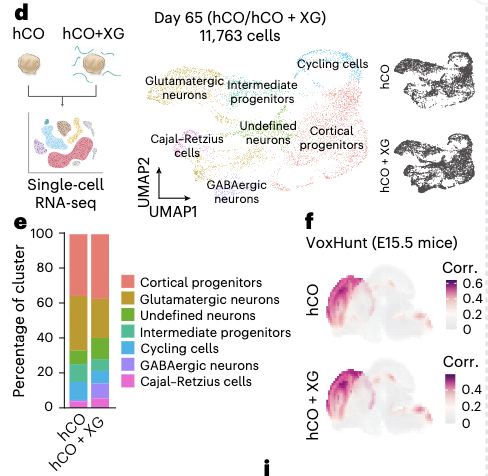
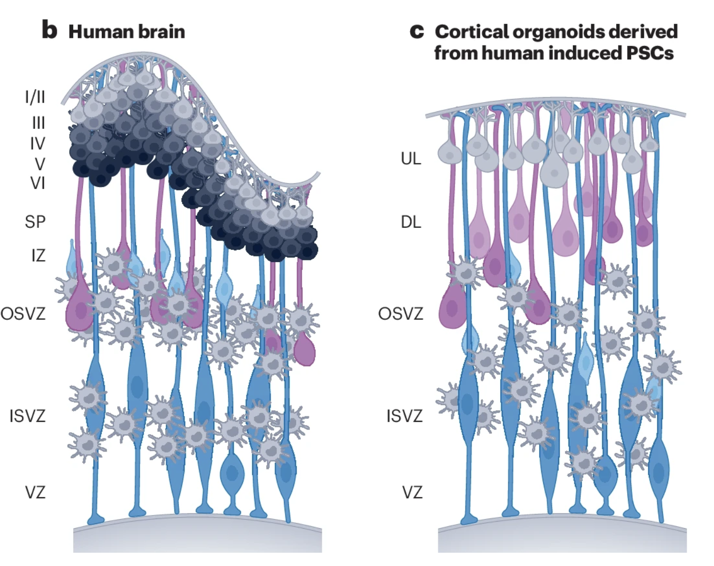
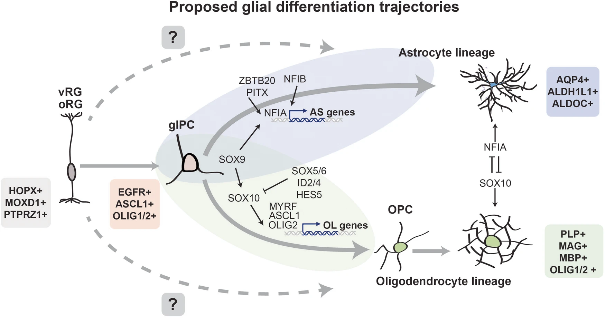

Resource
- Bhaduri et al., Nature (2021): An atlas of cortical arealization identifies dynamic molecular signatures(Human Brain)
- Supplementary Table 3. Region specific marker genes, including those at the cell type specific level. Markers
- Hendriks et al., Cell (2024) : Human fetal brain self-organizes into long-term expanding organoids
- Supple table 2
- Uzquiano et al., Cell (2022) : Proper acquisition of cell class identity in organoids allows definition of fate specification programs of the human cerebral cortex
- Fleck et al., Nature (2020): Inferring and perturbing cell fate regulomes in human brain organoids
Narazaki et al.,2025
- Cortical organoid(hCO)
- D65

- Voxhunt로 Allen brain Mouse E15.5에 매핑해서 Forebrain 유도되는 것을 확인함.
→ Tangram? 을하려면 D150에 기대되는 human brain spatial 필요함
- Supplementary Table 3. List of differentially expressed genes per each cluster
Narazaki_2025 = { "Cortical progenitors": [ "FBXL7", "COL4A5", "SOX6", "CREB5", "NEAT1", "SHROOM3", "IL1RAPL1", "ADGRV1", "SOX2-OT", "AL357507.1" ], "Glutamatergic neurons": [ "THSD7A", "GRIA2", "NEUROD6", "DCC", "MYT1L", "STMN2", "CNTN1", "CACNA1E", "LRRC7", "LRRTM4" ], "Undefined neurons": [ "FTL" ], "Intermediate progenitors": [ "CACNA2D1", "SLCO5A1", "AC132153.1", "NFIA-AS2", "MIAT", "ST18", "PLPPR1", "EOMES", "AC099792.1", "NHLH1" ], "Cycling cells": [ "CENPF", "TOP2A", "DIAPH3", "NUSAP1", "MKI67", "ASPM", "SMC4", "TPX2", "RRM2", "HMGB2" ], "GABAergic neurons": [ "PBX3", "TENM2", "GREB1L", "AC233296.1", "EBF1", "NRXN3", "ADGRL3", "AL589740.1", "LINC01414", "ZNF385D" ], "Cajal Retzius cells": [ "RELN", "SVEP1", "GRIK4", "PTPRD", "CADM2", "FAM155A", "EPHA3", "LINGO2", "OPCML", "SNTG1" ] }
Birtele et al., 2024

Caporale et al., 2024
- Cortical brain organoid
- D50, 100, 250/300
- Supplementary Data2
Caporale_2024 = { "pProgenitors": ["CDC20", "MKI67", "TOP2A"], "rgProgenitors": ["PAX6", "VIM", "SOX2", "NES"], "org/Astrocytes": ["AQP4", "S100B", "HOPX"], "neurons": ["STMN2", "DCX", "GAP43"], "excNeurons": ["NEUROD2", "TBR1", "SATB2", "SLC17A6", "SLC17A7", "SLA", "GRIA2"], "interneurons": ["DLX2", "DLX5", "DLX6-AS1", "GAD1"], "interneuronsGAD2": ["GAD2"], "cajalR": ["RELN", "PAX6", "CBLN1"], "migNeurons": ["FOXP1", "CA8", "LHX1"] }
Cell type describtion
- 3 Reference cell type 통합 해석을 위함.
Progenitors
Proliferating progenitor cells
- CDC20, MKI67, TOP2A
- CBO 발달 전반에 걸쳐 고르게 분포
- 오가노이드의 표면(periphery)에 위치하는 경향이 있으며, SOX2+ 세포와 함께 관찰된다
Radial glia
- aRG → IP → oRG
- 장기 배양 오가노이드에서는 일반적으로 aRG보다 oRG의 비율이 높아지는 경향
- Apical Radial Glia, aRG
- SOX2, EMX1, HES1
- Neural Stem Cell의 전형적인 마커들의 발현을 보이면서 증식하는 Progenitor
- oRG( Outer Radial Glia)
- HES1, HOPX, MOXD1
- Day 250/300 에서 더 풍부하게 관찰
- ExN외 Glial lineage에도 기여할 수 있음
- 5~6개월 배양 오가노이드에서, pre-OPC 마커(EGFR, PDGFRA, OLIG1, OLIG2)와 oRG 동시에 발현하는 cluster가 관찰 되는데, 이것이 oRG가 Glial lineage로 분화할 수 있음을 보여주는 형태.
Uzquiano et al.,
- Glycolytic RG
- BNIP3,PGK1 발현을 보이는 RG
- aRG가 정상 뇌발달 과정에서 Glycolyic metabolism을 통해 에너지를 얻는 경향이 있음, 오가노이드에서 이러한 대사 경로가 활성된 RG를 Glycolytic RG로 지칭
- hypoxic center에 위치하는 경향
- aRG, uPN에서 glycolytic 경향이 강한 클러스터를 의미
Note
- RG → IP →PN
→Astroglia,OPC 로 분화
- aRG와 oRG 모두 Oligodendrocyte로의 분화 능력은 있다
Neuronal
Neurons
- General neurona markers
IP (Intermediate progenitors)
- EOMES, INSM1
- Corticogenesis의 직간접적 경로에 핵심인자로써, 주로 ExN lineage에 속한다. Glutamatergic NeuN 생산 역할과 일치
IN(Interneurons)
- DLX2, DLX5, DLX6-AS1, GAD1, GAD2
- Day 250/300 포함에서 더 풍부하게 관찰
- 6개월 시점에 나타나는 IN은 Day23에서 관찰된 GAD2+IN 과는 다르다
- 6개월 시점에 출현하는 IN은 Telencephalic marker인 FOXG1을 발현하고 SP8, SCGN, PROX1, CALB2를 발현한다.
- GABAergic Interneurons
- GAD65, GAD67(#GAD1 = GAD67, GAD2 = GAD65)
- Day 250/300의 후기 시점에서 더 풍부하게 관찰됨
Note
- 6M_Telencephalic_IN: 6개월 시점, FOXG1과 함께 SP8/SCGN 등 발현 → 초기 Telen. IN 특징
- Late_GABAergic_IN: Day 250~300, GAD1/2 (GAD67/65), DLX2
- CBO_GABAergic_primed: 초기 단계의 CBO에서도 DLX2, GAD2 발현으로 IN 분화 경향 나타남
CFuPN(Corticofugal Projection Neurons)
- DL-PN(Deep-Layer Projection Neurons)이라고도 한다
- CTIP2 (BCL11B), SOX5, NFIA, NFIB, CELF1, TLE4
- 1개월 시점에서 aRG 표면에 위치한다
- CFuPN은 aRG및 IP와 같은 신경 전구 세포로부터 유래해서, trajectory가 보일 수 있음
- dorsal forebrain origin을 가지며, dorsal pallium에서만 분화가 가능하고 ventral에서는 잘 형성되지 않는다
CPN(Callosal Projection Neurons)
- SATB2, RORB, MEF2C, POU3F2, CUX1, CUX2, RAC3
- CPN이 oRG로부터 생성
- CFuPN과 마찬가지로 신경 전구 세포로부터 유래하며, CBOs에서 약 3개월이 되면 CPN이 가장 풍부한 ExN이 형성된다
Migrating Neurons
- 초기~중기에 더 abundant하다
Cajal–Retzius-like Cells
- RELN (Reelin), PAX6, CBLN1
- Neural network 성숙이 일어나며 소실된다
- Transient하다
Preplate
- Day23 부근에서 Corticla plate 채우는 최초 neuron의 개념
- 현재 데이터에서 해석 제외할 것
Glial Cells

Astrocytes
- DCX+ 세포들 사이에 산재되어 관찰
- Astroglia
- HOPX, AQP4, S100B
- 배양 4개월 시점에 소량 관찰되기 시작하는
- Mature astrocyte로 본다
OPC(Oligodendrocyte Precursor Cells)
- OLIG1, OLIG2
Mature Oligodendrocyte
- mature oligodendrocyte markers (MBP, PLP1, SOX10, PCDH15)